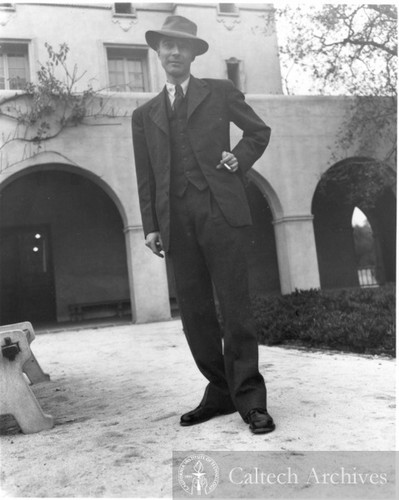
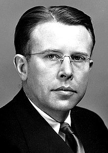
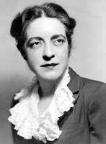
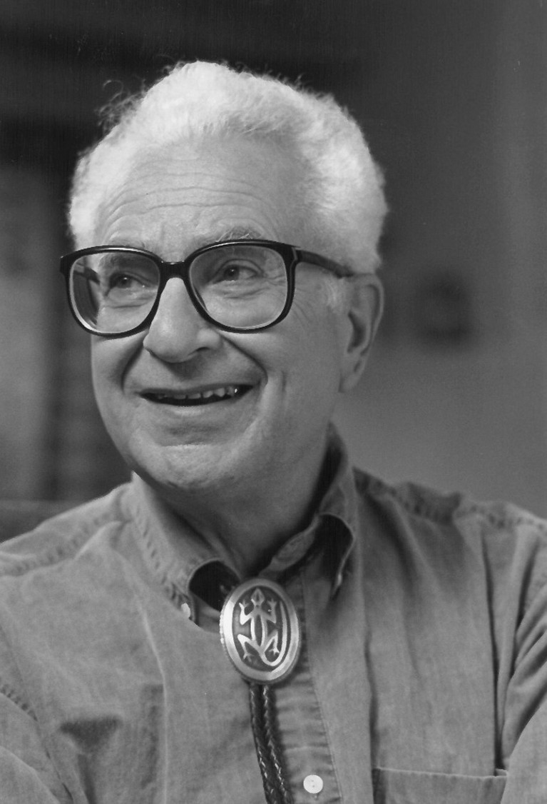

Early Career
Early Career
- Oppenheimer was awarded a United States National Research Council fellowship to the California Institute of Technology (Caltech) in September 1927. Bridgman also wanted him at Harvard, so a compromise was reached whereby he split his fellowship for the 1927–28 academic year between Harvard in 1927 and Caltech in 1928. At Caltech, he struck up a close friendship with Linus Pauling; they planned to mount a joint attack on the nature of the chemical bond, a field in which Pauling was a pioneer, with Oppenheimer supplying the mathematics and Pauling interpreting the results. The collaboration, and their friendship, ended after Oppenheimer invited Pauling's wife, Ava Helen Pauling, to join him on a tryst in Mexico. Oppenheimer later invited Pauling to be head of the Chemistry Division of the Manhattan Project, but Pauling refused, saying he was a pacifist.
- In the autumn of 1928, Oppenheimer visited Paul Ehrenfest's institute at the University of Leiden, the Netherlands, where he impressed by giving lectures in Dutch, despite having little experience with the language. There, he was given the nickname of Opje, later anglicized by his students as "Oppie". From Leiden, he continued on to the Swiss Federal Institute of Technology (ETH) in Zurich to work with Wolfgang Pauli on quantum mechanics and the continuous spectrum. Oppenheimer respected and liked Pauli and may have emulated his personal style as well as his critical approach to problems.
- On returning to the United States, Oppenheimer accepted an associate professorship from the University of California, Berkeley, where Raymond T. Birge wanted him so badly that he expressed a willingness to share him with Caltech.
- Before he began his Berkeley professorship, Oppenheimer was diagnosed with a mild case of tuberculosis and spent some weeks with his brother Frank at a New Mexico ranch, which he leased and eventually purchased. When he heard the ranch was available for lease, he exclaimed, "Hot dog!", and he later called it Perro Caliente ("hot dog" in Spanish). Later, he used to say that "physics and desert country" were his "two great loves". He recovered from tuberculosis and returned to Berkeley, where he prospered as an advisor and collaborator to a generation of physicists who admired him for his intellectual virtuosity and broad interests. His students and colleagues saw him as mesmerizing: hypnotic in private interaction, but often frigid in more public settings. His associates fell into two camps: one saw him as an aloof and impressive genius and aesthete, the other as a pretentious and insecure poseur. His students almost always fell into the former category, adopting his walk, speech, and other mannerisms, and even his inclination for reading entire texts in their original languages. Hans Bethe said of him:
- Probably the most important ingredient he brought to his teaching was his exquisite taste. He always knew what were the important problems, as shown by his choice of subjects. He truly lived with those problems, struggling for a solution, and he communicated his concern to the group. In its heyday, there were about eight or ten graduate students in his group and about six Post-doctoral Fellows. He met this group once a day in his office and discussed with one after another the status of the student's research problem. He was interested in everything, and in one afternoon they might discuss quantum electrodynamics, cosmic rays, electron pair production and nuclear physics.
- Oppenheimer worked closely with Nobel Prize-winning experimental physicist Ernest O. Lawrence and his cyclotron pioneers, helping them understand the data that their machines were producing at Berkeley's Radiation Laboratory, which eventually developed into today's Lawrence Berkeley National Laboratory.[43] In 1936, Berkeley promoted him to full professor at an annual salary of $3,300 (equivalent to $70,000 in 2022). In return, he was asked to curtail his teaching at Caltech, so a compromise was reached whereby Berkeley released him for six weeks each year, enough to teach one term at Caltech.
Scientific Work
- Oppenheimer did important research in theoretical astronomy (especially as related to general relativity and nuclear theory), nuclear physics, spectroscopy, and quantum field theory, including its extension into quantum electrodynamics. The formal mathematics of relativistic quantum mechanics also attracted his attention, although he doubted its validity. His work predicted many later finds, including the neutron, meson and neutron star.
- Initially, his major interest was the theory of the continuous spectrum. His first published paper, in 1926, concerned the quantum theory of molecular band spectra. He developed a method to carry out calculations of its transition probabilities. He calculated the photoelectric effect for hydrogen and X-rays, obtaining the absorption coefficient at the K-edge. His calculations accorded with observations of the X-ray absorption of the Sun, but not helium. Years later, it was realized that the Sun was largely composed of hydrogen and that his calculations were correct.
- Oppenheimer made important contributions to the theory of cosmic ray showers. He also worked on the problem of field electron emission. This work contributed to the development of the concept of quantum tunneling. In 1931, he co-wrote a paper, "Relativistic Theory of the Photoelectric Effect", with his student Harvey Hall, in which, based on empirical evidence, he correctly disputed Dirac's assertion that two of the energy levels of the hydrogen atom have the same energy. Subsequently, one of his doctoral students, Willis Lamb, determined that this was a consequence of what became known as the Lamb shift, for which Lamb was awarded the Nobel Prize in physics in 1955.
- With Melba Phillips, the first graduate student to begin her PhD under Oppenheimer's supervision, Oppenheimer worked on calculations of artificial radioactivity under bombardment by deuterons. When Ernest Lawrence and Edwin McMillan bombarded nuclei with deuterons they found the results agreed closely with the predictions of George Gamow, but when higher energies and heavier nuclei were involved, the results did not conform to the theory. In 1935, Oppenheimer and Phillips worked out a theory—subsequently known as the Oppenheimer–Phillips process—to explain the results. This theory is still in use today.
- As early as 1930, Oppenheimer wrote a paper that essentially predicted the existence of the positron. This was after a paper by Dirac proposed that electrons could have both a positive charge and negative energy. Dirac's paper introduced an equation, later known as the Dirac equation, that unified quantum mechanics, special relativity and the then-new concept of electron spin, to explain the Zeeman effect. Drawing on the body of experimental evidence, Oppenheimer rejected the idea that the predicted positively charged electrons were protons. He argued that they would have to have the same mass as an electron, whereas experiments showed that protons were much heavier than electrons. Two years later, Carl David Anderson discovered the positron, for which he received the 1936 Nobel Prize in Physics.
- In the late 1930s, Oppenheimer became interested in astrophysics, most likely through his friendship with Richard Tolman, resulting in a series of papers. In the first of these, "On the Stability of Stellar Neutron Cores" (1938), co-written with Robert Serber, Oppenheimer explored the properties of white dwarfs. This was followed by a paper co-written with one of his students, George Volkoff, "On Massive Neutron Cores", which demonstrated that there was a limit, known as the Tolman–Oppenheimer–Volkoff limit, to the mass of stars beyond which they would not remain stable as neutron stars and would undergo gravitational collapse. In 1939, Oppenheimer and another of his students, Hartland Snyder, produced the paper "On Continued Gravitational Contraction", which predicted the existence of what later became termed black holes. After the Born–Oppenheimer approximation paper, these papers remain his most cited, and were key factors in the rejuvenation of astrophysical research in the United States in the 1950s, mainly by John A. Wheeler.
- Oppenheimer's papers were considered difficult to understand even by the standards of the abstract topics he was expert in. He was fond of using elegant, if extremely complex, mathematical techniques to demonstrate physical principles, though he was sometimes criticized for making mathematical mistakes, presumably out of haste. "His physics was good", said his student Snyder, "but his arithmetic awful".
- After World War II, Oppenheimer published only five scientific papers, one of them in biophysics, and none after 1950. Murray Gell-Mann, a later Nobelist who, as a visiting scientist, worked with him at the Institute for Advanced Study in 1951, offered this opinion:
- He didn't have Sitzfleisch, "sitting flesh," when you sit on a chair. As far as I know, he never wrote a long paper or did a long calculation, anything of that kind. He didn't have patience for that; his own work consisted of little aperçus, but quite brilliant ones. But he inspired other people to do things, and his influence was fantastic.